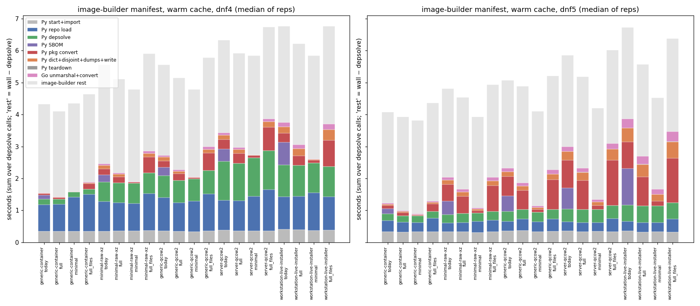
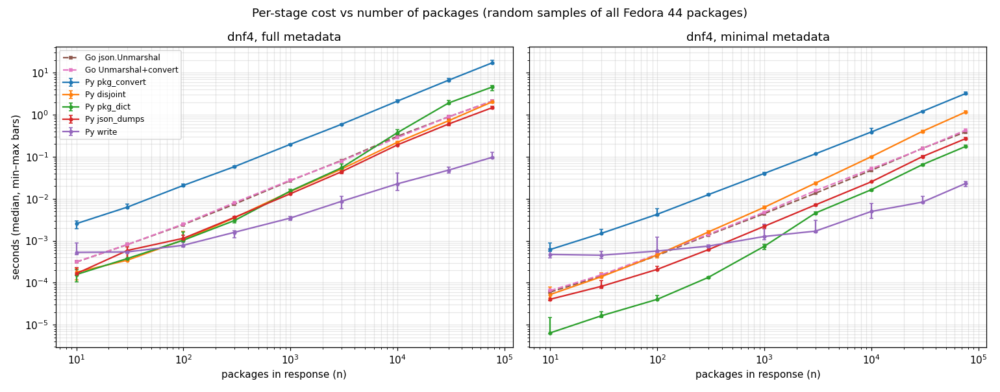
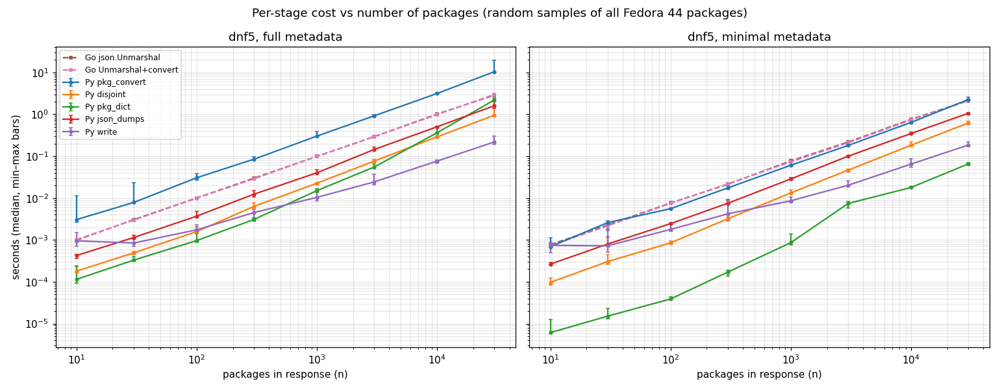
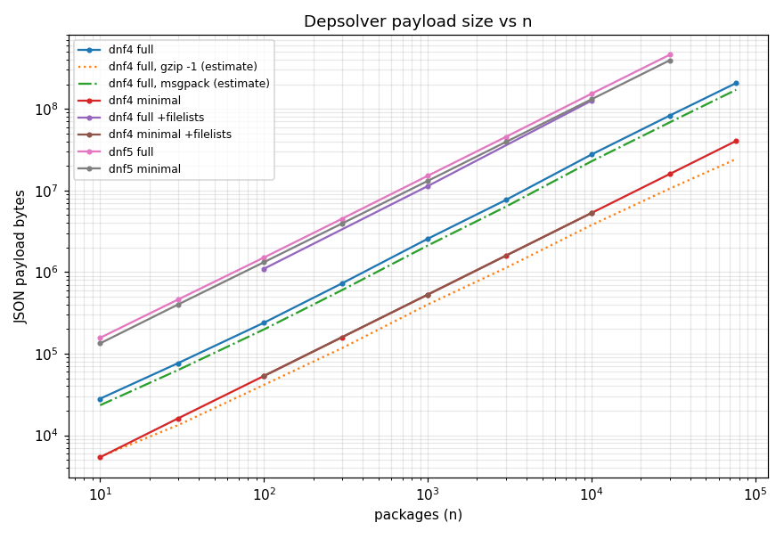
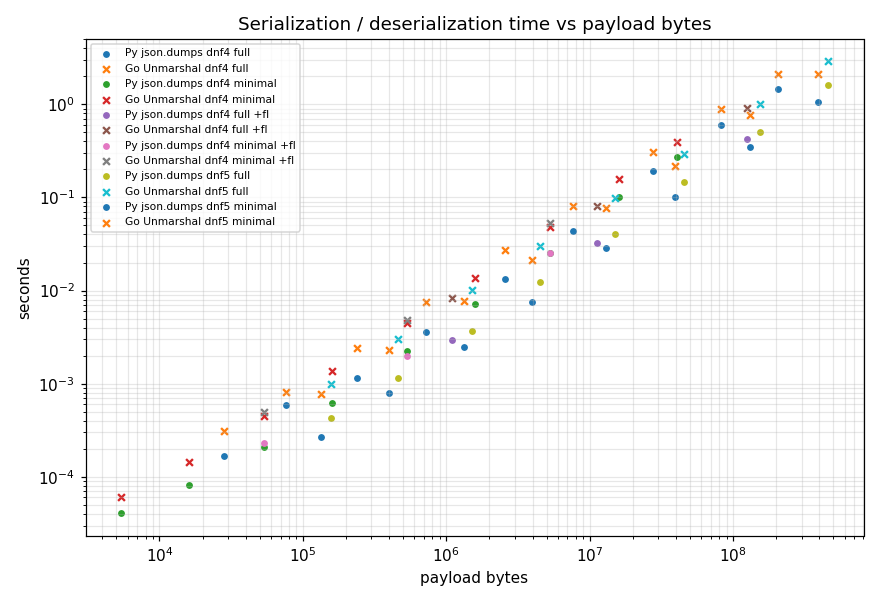

Depsolve metadata transfer · osbuild-depsolve-dnf → image-builder · Fedora 44
| measure | result | where |
|---|---|---|
| full vs minimal (no SBOM), metadata stages, image builds 288→2276 pkgs | dnf4 +0.05 → +0.52 s · dnf5 +0.10 → +1.02 s | 4–6 s wall |
| share of wall in metadata stages, full | dnf4 1.6–10.3 % · dnf5 4.3–27.3 % | §1 |
| in-depsolver SPDX SBOM (today − full) | 0.12–0.71 s dnf4 · 0.17–1.15 s dnf5 | §1 |
| largest metadata stage | Py dnf→model.Package: 60–70 % of metadata cost | §1, profiles |
| json.dumps + write · Go Unmarshal (workstation, full) | 0.08 / 0.11 s dnf4 · 0.23 / 0.25 s dnf5 | §1 |
| pipe | ~2 ms/MB (400–700 MB/s) | §4 |
| scaling exponent (n ≥ 100) | 0.97–1.09 convert/dumps/Unmarshal · 1.1–1.35 dict/disjoint | §2 |
| dnf5 remote_locations | 94 URLs/pkg · 75–81 % of payload bytes | §1 |
| whole repo 76 354 pkgs, dnf4 | full 207 MB: dump 10.8 s, search 17.2 s (1.6 GiB) · minimal 40 MB: 4.7 s | §3 |
| whole repo, dnf5 | full: OOM at 4 GiB · minimal: 1.0 GB, 15.6 s, Go 3.1 GiB | §3 |
| msgpack / CBOR (estimate) | −5…−17 % bytes vs JSON | §2 |
| gzip -1 (estimate) | 8–15× smaller | §2 |
| GOEXPERIMENT=jsonv2 (estimate) | 1.6–2.1× faster decode | §2 |
| image-builder outside depsolve | 2.8–3.1 s/manifest; YAML decode 62 % of Go CPU | profiles |
setup
| host | Intel Xeon, 8 vCPU, 15 GiB, kernel 6.12.94, podman 5.4.2 |
|---|---|
| container | Fedora 44 · Python 3.14.8 · python3-dnf 4.24.0 · libdnf5 5.4.6 · Go 1.26.9 · heavy runs --memory 4g |
| repos | Fedora 44 fedora + updates, 76 354 packages |
| osbuild | depsolve-package-metadata @ af8acb42 (base main aff1eccb) |
| image-builder | depsolve-package-metadata @ 58760d43d: d27e2f18f metadata level · 7bd6e1557 trace · 6634b1a8d pprof · 58760d43d benchmarks (base main 964a2fdc9) |
| reps | warm 5 · cold 3 · sweep 5 (filelists 3) · Go bench count 3 · dump/search 3 · median (min–max) |
| variants | today = full + SBOM in depsolver (upstream now) · full = no SBOM · minimal = package_metadata: minimal · full_files = + filelists |
| fit | exponent b: least squares on log t = a + b·log n, n ≥ 100 · linear t = c + k·n (µs/pkg, R²) · t = c′ + k′·bytes (ns/byte) |
| sweep scope | random samples of loaded packages: metadata transfer cost only, no libsolv solve; solve time = §1 |
1 · image-builder manifest · real depsolves · per stage

medians of 5 (warm) / 3 (cold) reps · seconds · metadata = Py convert+disjoint+dict+dumps+write + Go unmarshal+convert · share = metadata / wall
dnf4, warm cache
| image (pkgs) | variant | wall | repo load | resolve | Py convert | SBOM (py) | dumps+write | Go unmarshal | metadata total | share | IB rest | payload MB | Py RSS MiB | Go RSS MiB |
|---|---|---|---|---|---|---|---|---|---|---|---|---|---|---|
| generic-container (288) | today | 4.21 | 0.82 | 0.18 | 0.05 | 0.12 | 0.010 | 0.012 | 0.08 | 1.9% | 2.77 | 1.4 | 124 | 68 |
| generic-container (288) | full | 4.10 | 0.85 | 0.16 | 0.05 | 0.00 | 0.006 | 0.008 | 0.07 | 1.6% | 2.67 | 0.9 | 120 | 69 |
| generic-container (288) | minimal | 4.30 | 1.07 | 0.16 | 0.01 | 0.00 | 0.001 | 0.002 | 0.02 | 0.4% | 2.76 | 0.1 | 120 | 69 |
| generic-container (288) | full_files | 4.73 | 1.16 | 0.17 | 0.17 | 0.00 | 0.018 | 0.025 | 0.22 | 4.7% | 2.75 | 3.0 | 131 | 73 |
| minimal-raw-xz (592) | today | 5.55 | 0.93 | 0.61 | 0.18 | 0.23 | 0.041 | 0.047 | 0.35 | 6.3% | 3.10 | 5.4 | 169 | 84 |
| minimal-raw-xz (592) | full | 5.14 | 0.88 | 0.62 | 0.19 | 0.00 | 0.033 | 0.042 | 0.32 | 6.2% | 2.93 | 4.2 | 160 | 80 |
| minimal-raw-xz (592) | minimal | 4.94 | 0.87 | 0.62 | 0.04 | 0.00 | 0.002 | 0.003 | 0.05 | 1.0% | 2.89 | 0.3 | 128 | 69 |
| minimal-raw-xz (592) | full_files | 5.91 | 1.17 | 0.64 | 0.49 | 0.00 | 0.054 | 0.069 | 0.69 | 11.6% | 3.06 | 8.0 | 182 | 88 |
| generic-qcow2 (704) | today | 5.51 | 1.04 | 0.69 | 0.21 | 0.26 | 0.042 | 0.054 | 0.39 | 7.0% | 2.83 | 5.9 | 170 | 85 |
| generic-qcow2 (704) | full | 5.20 | 0.89 | 0.70 | 0.21 | 0.00 | 0.032 | 0.045 | 0.34 | 6.5% | 2.87 | 4.5 | 162 | 80 |
| generic-qcow2 (704) | minimal | 4.89 | 0.96 | 0.69 | 0.05 | 0.00 | 0.002 | 0.004 | 0.06 | 1.3% | 2.75 | 0.4 | 128 | 68 |
| generic-qcow2 (704) | full_files | 5.90 | 1.16 | 0.73 | 0.54 | 0.00 | 0.054 | 0.076 | 0.75 | 12.6% | 2.79 | 8.6 | 184 | 87 |
| server-qcow2 (1095) | today | 6.46 | 0.93 | 1.21 | 0.30 | 0.39 | 0.058 | 0.070 | 0.51 | 7.9% | 2.90 | 8.1 | 191 | 88 |
| server-qcow2 (1095) | full | 5.92 | 0.95 | 1.16 | 0.31 | 0.00 | 0.045 | 0.058 | 0.49 | 8.1% | 2.95 | 5.7 | 174 | 85 |
| server-qcow2 (1095) | minimal | 5.63 | 1.07 | 1.21 | 0.07 | 0.00 | 0.004 | 0.006 | 0.09 | 1.6% | 3.10 | 0.6 | 131 | 68 |
| server-qcow2 (1095) | full_files | 6.66 | 1.30 | 1.21 | 0.74 | 0.00 | 0.079 | 0.094 | 1.03 | 15.1% | 2.87 | 11.5 | 212 | 104 |
| workstation-live-installer (2276) | today | 6.71 | 1.02 | 0.99 | 0.29 | 0.71 | 0.103 | 0.122 | 0.62 | 9.2% | 3.01 | 14.3 | 217 | 117 |
| workstation-live-installer (2276) | full | 6.21 | 1.04 | 0.98 | 0.29 | 0.00 | 0.080 | 0.108 | 0.64 | 10.3% | 3.16 | 9.2 | 189 | 115 |
| workstation-live-installer (2276) | minimal | 5.82 | 1.17 | 0.94 | 0.09 | 0.00 | 0.008 | 0.012 | 0.12 | 2.1% | 3.23 | 1.2 | 137 | 71 |
| workstation-live-installer (2276) | full_files | 6.97 | 1.05 | 0.95 | 0.82 | 0.00 | 0.170 | 0.172 | 1.33 | 19.5% | 3.06 | 20.2 | 242 | 139 |
dnf5, warm cache
| image (pkgs) | variant | wall | repo load | resolve | Py convert | SBOM (py) | dumps+write | Go unmarshal | metadata total | share | IB rest | payload MB | Py RSS MiB | Go RSS MiB |
|---|---|---|---|---|---|---|---|---|---|---|---|---|---|---|
| generic-container (288) | today | 4.13 | 0.36 | 0.20 | 0.10 | 0.17 | 0.025 | 0.032 | 0.17 | 4.0% | 2.86 | 4.8 | 142 | 78 |
| generic-container (288) | full | 3.97 | 0.30 | 0.20 | 0.10 | 0.00 | 0.024 | 0.028 | 0.17 | 4.3% | 2.94 | 4.2 | 138 | 76 |
| generic-container (288) | minimal | 3.84 | 0.29 | 0.21 | 0.02 | 0.00 | 0.019 | 0.022 | 0.07 | 1.7% | 2.92 | 3.5 | 135 | 71 |
| generic-container (288) | full_files | 4.30 | 0.42 | 0.22 | 0.23 | 0.00 | 0.038 | 0.043 | 0.32 | 7.4% | 3.07 | 6.4 | 145 | 81 |
| minimal-raw-xz (592) | today | 4.97 | 0.27 | 0.27 | 0.52 | 0.42 | 0.084 | 0.086 | 0.75 | 15.2% | 2.77 | 12.4 | 208 | 104 |
| minimal-raw-xz (592) | full | 4.64 | 0.28 | 0.29 | 0.53 | 0.00 | 0.080 | 0.079 | 0.76 | 16.2% | 2.88 | 11.2 | 193 | 105 |
| minimal-raw-xz (592) | minimal | 3.94 | 0.34 | 0.27 | 0.07 | 0.00 | 0.039 | 0.041 | 0.16 | 4.1% | 2.85 | 7.3 | 155 | 85 |
| minimal-raw-xz (592) | full_files | 5.02 | 0.36 | 0.28 | 0.81 | 0.00 | 0.089 | 0.105 | 1.06 | 22.1% | 2.90 | 15.0 | 209 | 105 |
| generic-qcow2 (704) | today | 5.18 | 0.30 | 0.31 | 0.61 | 0.48 | 0.094 | 0.103 | 0.85 | 16.7% | 2.75 | 14.3 | 215 | 102 |
| generic-qcow2 (704) | full | 4.91 | 0.36 | 0.30 | 0.59 | 0.00 | 0.082 | 0.092 | 0.85 | 17.3% | 3.02 | 12.8 | 199 | 106 |
| generic-qcow2 (704) | minimal | 4.18 | 0.31 | 0.31 | 0.08 | 0.00 | 0.046 | 0.047 | 0.19 | 4.8% | 2.97 | 8.7 | 165 | 86 |
| generic-qcow2 (704) | full_files | 5.18 | 0.39 | 0.31 | 0.93 | 0.00 | 0.104 | 0.126 | 1.22 | 24.0% | 2.94 | 16.9 | 217 | 117 |
| server-qcow2 (1095) | today | 5.89 | 0.29 | 0.40 | 0.87 | 0.66 | 0.169 | 0.138 | 1.30 | 22.1% | 2.86 | 21.0 | 252 | 146 |
| server-qcow2 (1095) | full | 5.22 | 0.30 | 0.41 | 0.90 | 0.00 | 0.127 | 0.128 | 1.32 | 24.8% | 2.86 | 18.7 | 234 | 120 |
| server-qcow2 (1095) | minimal | 4.22 | 0.28 | 0.41 | 0.13 | 0.00 | 0.078 | 0.075 | 0.31 | 7.2% | 2.87 | 13.5 | 189 | 104 |
| server-qcow2 (1095) | full_files | 6.30 | 0.41 | 0.40 | 1.42 | 0.00 | 0.178 | 0.174 | 1.94 | 32.6% | 2.92 | 24.4 | 262 | 155 |
| workstation-live-installer (2276) | today | 6.96 | 0.29 | 0.52 | 0.83 | 1.15 | 0.316 | 0.272 | 1.55 | 22.7% | 2.87 | 41.6 | 302 | 230 |
| workstation-live-installer (2276) | full | 5.69 | 0.31 | 0.52 | 0.91 | 0.00 | 0.226 | 0.249 | 1.53 | 27.3% | 2.87 | 36.6 | 273 | 148 |
| workstation-live-installer (2276) | minimal | 4.60 | 0.29 | 0.52 | 0.15 | 0.00 | 0.166 | 0.162 | 0.51 | 11.5% | 2.87 | 28.5 | 223 | 150 |
| workstation-live-installer (2276) | full_files | 6.42 | 0.40 | 0.52 | 1.39 | 0.00 | 0.351 | 0.311 | 2.22 | 34.9% | 2.92 | 47.6 | 311 | 246 |
dnf4, cold cache
| image (pkgs) | variant | wall | repo load | resolve | Py convert | SBOM (py) | dumps+write | Go unmarshal | metadata total | share | IB rest | payload MB | Py RSS MiB | Go RSS MiB |
|---|---|---|---|---|---|---|---|---|---|---|---|---|---|---|
| generic-qcow2 (704) | today | 11.57 | 5.70 | 1.68 | 0.25 | 0.29 | 0.053 | 0.058 | 0.45 | 3.9% | 3.01 | 5.9 | 201 | 88 |
| generic-qcow2 (704) | minimal | 11.48 | 6.28 | 1.65 | 0.05 | 0.00 | 0.003 | 0.006 | 0.06 | 0.5% | 3.09 | 0.4 | 192 | 68 |
dnf5, cold cache
| image (pkgs) | variant | wall | repo load | resolve | Py convert | SBOM (py) | dumps+write | Go unmarshal | metadata total | share | IB rest | payload MB | Py RSS MiB | Go RSS MiB |
|---|---|---|---|---|---|---|---|---|---|---|---|---|---|---|
| generic-qcow2 (704) | today | 11.50 | 5.57 | 1.28 | 0.63 | 0.50 | 0.103 | 0.101 | 0.90 | 7.8% | 2.95 | 14.3 | 233 | 110 |
| generic-qcow2 (704) | minimal | 10.26 | 5.42 | 1.26 | 0.09 | 0.00 | 0.051 | 0.052 | 0.20 | 2.0% | 2.97 | 8.7 | 207 | 87 |
all stages · median (min–max) ms · sum over the 2 depsolve calls
generic-container — dnf4 — 288 packages over 2 depsolve calls, 5 reps
| stage (sum over calls), median (min–max) ms | today | full | minimal | full_files |
|---|---|---|---|---|
| response payload (MB) | 1.44 | 0.88 | 0.15 | 2.99 |
| of which depsolver SBOM (MB) | 0.57 | 0.00 | 0.00 | 0.00 |
| reldeps / files returned | 7054 | 7054 | 0 | 7054 |
| Py interpreter start (before harness) | 116 (102–118) | 101 (101–110) | 101 (92–105) | 99 (96–108) |
| Py import dnf/libdnf5 + tool | 237 (230–244) | 241 (232–266) | 243 (226–261) | 240 (225–262) |
| Py read+parse request | 0 (0–0) | 0 (0–0) | 0 (0–0) | 0 (0–0) |
| Py repo metadata load (solver init) | 822 (717–1165) | 851 (808–1236) | 1068 (801–1322) | 1157 (1110–1334) |
| Py depsolve (resolve, minus convert/SBOM) | 177 (168–186) | 163 (158–184) | 165 (156–318) | 167 (161–183) |
| Py dnf pkg -> model.Package | 50 (49–56) | 46 (46–50) | 11 (10–15) | 171 (157–179) |
| Py SPDX SBOM in depsolver | 124 (119–130) | 0 (0–0) | 0 (0–0) | 0 (0–0) |
| Py disjoint sets (hash Packages) | 3 (3–5) | 3 (3–4) | 1 (1–2) | 5 (5–6) |
| Py model.Package -> dict | 2 (2–4) | 3 (3–4) | 0 (0–0) | 3 (3–4) |
| Py json.dumps | 6 (5–8) | 3 (3–6) | 1 (1–1) | 9 (8–9) |
| Py stdout write+flush | 4 (4–8) | 2 (2–3) | 0 (0–1) | 9 (8–10) |
| Py exit/teardown after output | 1 (1–1) | 1 (1–1) | 1 (1–1) | 1 (1–1) |
| (of repo load: Repo.load md check) | 262 (169–527) | 263 (245–586) | 474 (281–750) | 402 (167–589) |
| Go marshal request | 0 (0–0) | 0 (0–0) | 0 (0–0) | 0 (0–0) |
| Go json.Unmarshal | 12 (12–13) | 8 (8–11) | 2 (1–3) | 25 (24–28) |
| Go convert to rpmmd | 0 (0–0) | 0 (0–1) | 0 (0–0) | 0 (0–1) |
| Go other post-processing (incl. SBOM doc) | 0 (0–1) | 0 (0–1) | 0 (0–1) | 0 (0–0) |
| metadata-dependent stages (convert+disjoint+dict+dumps+write+unmarshal+convert) | 83 (77–84) | 67 (66–76) | 16 (14–20) | 224 (210–234) |
| depsolver process (Go view) | 1551 (1413–1905) | 1428 (1365–1855) | 1639 (1291–1852) | 1878 (1779–2044) |
| output arrival window (first→last byte) | 7 (7–11) | 3 (2–3) | 0 (0–0) | 9 (8–9) |
| rest of image-builder (not depsolve) | 2767 (2603–3019) | 2674 (2611–3146) | 2759 (2608–2976) | 2754 (2699–2981) |
| total wall | 4212 (4166–4740) | 4102 (3985–5011) | 4300 (3900–4831) | 4726 (4505–4958) |
| metadata-dependent share of wall | 1.9% | 1.6% | 0.4% | 4.7% |
| peak RSS Python (MiB, max over calls) | 124 | 120 | 120 | 131 |
| peak RSS image-builder Go process (MiB) | 68 | 69 | 69 | 73 |
minimal-raw-xz — dnf4 — 592 packages over 2 depsolve calls, 5 reps
| stage (sum over calls), median (min–max) ms | today | full | minimal | full_files |
|---|---|---|---|---|
| response payload (MB) | 5.39 | 4.18 | 0.30 | 8.03 |
| of which depsolver SBOM (MB) | 1.22 | 0.00 | 0.00 | 0.00 |
| reldeps / files returned | 51554 | 51554 | 0 | 51554 |
| Py interpreter start (before harness) | 110 (103–117) | 108 (105–124) | 109 (101–124) | 109 (108–118) |
| Py import dnf/libdnf5 + tool | 244 (236–282) | 253 (235–255) | 250 (238–325) | 255 (237–312) |
| Py read+parse request | 0 (0–0) | 0 (0–0) | 0 (0–0) | 0 (0–0) |
| Py repo metadata load (solver init) | 928 (850–1077) | 883 (850–1050) | 866 (734–1532) | 1166 (997–1304) |
| Py depsolve (resolve, minus convert/SBOM) | 610 (598–623) | 616 (613–653) | 624 (580–648) | 642 (605–847) |
| Py dnf pkg -> model.Package | 184 (182–203) | 194 (186–197) | 41 (36–55) | 494 (465–561) |
| Py SPDX SBOM in depsolver | 226 (218–247) | 0 (0–0) | 0 (0–0) | 0 (0–0) |
| Py disjoint sets (hash Packages) | 28 (27–31) | 29 (27–33) | 4 (4–5) | 37 (36–41) |
| Py model.Package -> dict | 44 (42–49) | 18 (16–21) | 0 (0–1) | 19 (17–21) |
| Py json.dumps | 23 (22–24) | 21 (20–22) | 1 (1–2) | 31 (30–37) |
| Py stdout write+flush | 17 (16–20) | 12 (10–12) | 1 (1–1) | 23 (20–44) |
| Py exit/teardown after output | 1 (1–1) | 1 (1–1) | 1 (1–1) | 1 (1–1) |
| (of repo load: Repo.load md check) | 318 (268–459) | 297 (241–442) | 286 (181–763) | 296 (207–459) |
| Go marshal request | 0 (0–0) | 0 (0–0) | 0 (0–0) | 0 (0–0) |
| Go json.Unmarshal | 47 (46–50) | 42 (39–58) | 3 (3–5) | 69 (64–87) |
| Go convert to rpmmd | 2 (1–5) | 4 (1–6) | 0 (0–2) | 2 (2–5) |
| Go other post-processing (incl. SBOM doc) | 0 (0–1) | 1 (1–1) | 1 (0–1) | 1 (0–1) |
| metadata-dependent stages (convert+disjoint+dict+dumps+write+unmarshal+convert) | 346 (342–376) | 319 (312–339) | 54 (45–66) | 689 (647–768) |
| depsolver process (Go view) | 2512 (2312–2612) | 2163 (2114–2355) | 1923 (1709–2683) | 2899 (2647–2997) |
| output arrival window (first→last byte) | 27 (25–29) | 16 (15–19) | 1 (1–2) | 29 (26–48) |
| rest of image-builder (not depsolve) | 3100 (2780–3187) | 2926 (2673–3274) | 2890 (2748–3013) | 3059 (2756–3178) |
| total wall | 5552 (5397–5813) | 5136 (4829–5693) | 4941 (4487–5579) | 5914 (5586–6192) |
| metadata-dependent share of wall | 6.3% | 6.2% | 1.0% | 11.6% |
| peak RSS Python (MiB, max over calls) | 169 | 160 | 128 | 182 |
| peak RSS image-builder Go process (MiB) | 84 | 80 | 69 | 88 |
generic-qcow2 — dnf4 — 704 packages over 2 depsolve calls, 5 reps
| stage (sum over calls), median (min–max) ms | today | full | minimal | full_files |
|---|---|---|---|---|
| response payload (MB) | 5.93 | 4.48 | 0.36 | 8.57 |
| of which depsolver SBOM (MB) | 1.44 | 0.00 | 0.00 | 0.00 |
| reldeps / files returned | 53964 | 53964 | 0 | 53964 |
| Py interpreter start (before harness) | 109 (99–122) | 104 (99–114) | 101 (99–117) | 113 (101–115) |
| Py import dnf/libdnf5 + tool | 240 (234–255) | 238 (223–273) | 235 (234–241) | 250 (228–279) |
| Py read+parse request | 0 (0–0) | 0 (0–0) | 0 (0–0) | 0 (0–0) |
| Py repo metadata load (solver init) | 1044 (809–1129) | 894 (792–1242) | 958 (756–1224) | 1156 (1017–1546) |
| Py depsolve (resolve, minus convert/SBOM) | 687 (642–712) | 697 (655–721) | 687 (649–799) | 732 (672–775) |
| Py dnf pkg -> model.Package | 209 (203–220) | 210 (208–218) | 47 (42–55) | 544 (511–626) |
| Py SPDX SBOM in depsolver | 260 (248–275) | 0 (0–0) | 0 (0–0) | 0 (0–0) |
| Py disjoint sets (hash Packages) | 31 (28–35) | 29 (28–30) | 5 (5–8) | 40 (35–44) |
| Py model.Package -> dict | 44 (37–49) | 18 (18–22) | 0 (0–1) | 19 (16–21) |
| Py json.dumps | 26 (23–27) | 22 (20–27) | 1 (1–2) | 34 (31–38) |
| Py stdout write+flush | 16 (15–17) | 10 (9–11) | 1 (1–2) | 20 (19–28) |
| Py exit/teardown after output | 1 (1–1) | 1 (1–1) | 1 (1–1) | 1 (1–1) |
| (of repo load: Repo.load md check) | 454 (202–599) | 321 (262–673) | 346 (223–679) | 341 (249–799) |
| Go marshal request | 0 (0–0) | 0 (0–0) | 0 (0–0) | 0 (0–0) |
| Go json.Unmarshal | 54 (48–56) | 45 (44–53) | 4 (3–5) | 76 (68–88) |
| Go convert to rpmmd | 1 (1–2) | 4 (2–5) | 0 (0–1) | 2 (2–3) |
| Go other post-processing (incl. SBOM doc) | 0 (0–1) | 0 (0–1) | 0 (0–0) | 0 (0–1) |
| metadata-dependent stages (convert+disjoint+dict+dumps+write+unmarshal+convert) | 387 (360–391) | 343 (336–354) | 62 (53–71) | 748 (683–820) |
| depsolver process (Go view) | 2676 (2502–2729) | 2222 (2075–2640) | 2123 (1799–2280) | 3083 (2737–3174) |
| output arrival window (first→last byte) | 26 (24–31) | 14 (12–14) | 1 (1–2) | 25 (22–34) |
| rest of image-builder (not depsolve) | 2829 (2689–3043) | 2873 (2792–2938) | 2748 (2675–2816) | 2789 (2720–3103) |
| total wall | 5514 (5423–5617) | 5202 (4914–5528) | 4886 (4505–5033) | 5901 (5599–6292) |
| metadata-dependent share of wall | 7.0% | 6.5% | 1.3% | 12.6% |
| peak RSS Python (MiB, max over calls) | 170 | 162 | 128 | 184 |
| peak RSS image-builder Go process (MiB) | 85 | 80 | 68 | 87 |
server-qcow2 — dnf4 — 1095 packages over 2 depsolve calls, 5 reps
| stage (sum over calls), median (min–max) ms | today | full | minimal | full_files |
|---|---|---|---|---|
| response payload (MB) | 8.09 | 5.71 | 0.56 | 11.48 |
| of which depsolver SBOM (MB) | 2.38 | 0.00 | 0.00 | 0.00 |
| reldeps / files returned | 68633 | 68633 | 0 | 68633 |
| Py interpreter start (before harness) | 127 (124–130) | 110 (106–111) | 110 (102–125) | 113 (107–123) |
| Py import dnf/libdnf5 + tool | 255 (247–274) | 244 (233–269) | 249 (242–254) | 234 (230–297) |
| Py read+parse request | 0 (0–0) | 0 (0–0) | 0 (0–0) | 0 (0–0) |
| Py repo metadata load (solver init) | 932 (882–1343) | 955 (869–1108) | 1071 (867–1208) | 1300 (1040–1423) |
| Py depsolve (resolve, minus convert/SBOM) | 1215 (1180–1311) | 1165 (1149–1219) | 1210 (1163–1269) | 1212 (1154–1256) |
| Py dnf pkg -> model.Package | 301 (295–333) | 314 (282–322) | 71 (69–72) | 743 (726–793) |
| Py SPDX SBOM in depsolver | 393 (388–395) | 0 (0–0) | 0 (0–0) | 0 (0–0) |
| Py disjoint sets (hash Packages) | 46 (44–46) | 44 (43–54) | 8 (8–10) | 57 (54–59) |
| Py model.Package -> dict | 25 (23–29) | 25 (23–34) | 1 (1–1) | 27 (25–30) |
| Py json.dumps | 35 (33–39) | 27 (27–32) | 2 (2–3) | 46 (44–49) |
| Py stdout write+flush | 23 (19–36) | 18 (15–22) | 2 (2–3) | 33 (31–53) |
| Py exit/teardown after output | 1 (1–1) | 1 (1–1) | 1 (1–1) | 1 (1–1) |
| (of repo load: Repo.load md check) | 282 (243–675) | 350 (283–511) | 410 (257–595) | 493 (285–506) |
| Go marshal request | 0 (0–0) | 0 (0–0) | 0 (0–0) | 0 (0–0) |
| Go json.Unmarshal | 70 (67–74) | 58 (54–69) | 6 (5–7) | 94 (92–104) |
| Go convert to rpmmd | 3 (2–7) | 2 (2–6) | 0 (0–1) | 3 (3–3) |
| Go other post-processing (incl. SBOM doc) | 1 (0–1) | 1 (1–1) | 1 (0–1) | 1 (0–1) |
| metadata-dependent stages (convert+disjoint+dict+dumps+write+unmarshal+convert) | 508 (485–553) | 492 (462–532) | 91 (88–94) | 1027 (979–1062) |
| depsolver process (Go view) | 3484 (3329–3768) | 2967 (2779–3144) | 2713 (2493–2929) | 3737 (3522–4042) |
| output arrival window (first→last byte) | 41 (35–52) | 26 (23–31) | 3 (2–3) | 44 (41–65) |
| rest of image-builder (not depsolve) | 2901 (2734–3002) | 2950 (2744–3067) | 3102 (2905–3122) | 2872 (2655–3344) |
| total wall | 6464 (6141–6762) | 5918 (5807–6096) | 5628 (5613–6059) | 6656 (6273–7495) |
| metadata-dependent share of wall | 7.9% | 8.1% | 1.6% | 15.1% |
| peak RSS Python (MiB, max over calls) | 191 | 174 | 131 | 212 |
| peak RSS image-builder Go process (MiB) | 88 | 85 | 68 | 104 |
workstation-live-installer — dnf4 — 2276 packages over 2 depsolve calls, 5 reps
| stage (sum over calls), median (min–max) ms | today | full | minimal | full_files |
|---|---|---|---|---|
| response payload (MB) | 14.30 | 9.24 | 1.17 | 20.23 |
| of which depsolver SBOM (MB) | 5.06 | 0.00 | 0.00 | 0.00 |
| reldeps / files returned | 108404 | 108404 | 0 | 108404 |
| Py interpreter start (before harness) | 152 (134–171) | 117 (110–175) | 108 (104–118) | 119 (110–205) |
| Py import dnf/libdnf5 + tool | 255 (254–267) | 280 (256–296) | 268 (261–292) | 262 (253–281) |
| Py read+parse request | 0 (0–0) | 0 (0–0) | 0 (0–0) | 0 (0–1) |
| Py repo metadata load (solver init) | 1021 (882–1084) | 1040 (914–1266) | 1173 (991–1349) | 1049 (1022–1141) |
| Py depsolve (resolve, minus convert/SBOM) | 995 (918–1006) | 976 (943–1126) | 942 (921–1045) | 947 (931–1027) |
| Py dnf pkg -> model.Package | 286 (270–310) | 294 (273–315) | 86 (80–97) | 819 (767–840) |
| Py SPDX SBOM in depsolver | 706 (680–761) | 0 (0–0) | 0 (0–0) | 0 (0–0) |
| Py disjoint sets (hash Packages) | 49 (48–51) | 49 (46–51) | 14 (14–15) | 63 (58–90) |
| Py model.Package -> dict | 52 (51–54) | 97 (93–103) | 1 (1–2) | 95 (95–106) |
| Py json.dumps | 66 (65–68) | 48 (45–50) | 4 (4–4) | 88 (85–90) |
| Py stdout write+flush | 36 (34–40) | 33 (30–37) | 3 (3–4) | 81 (65–109) |
| Py exit/teardown after output | 1 (1–1) | 1 (1–1) | 1 (1–1) | 1 (1–1) |
| (of repo load: Repo.load md check) | 354 (238–475) | 373 (209–555) | 481 (309–659) | 249 (227–290) |
| Go marshal request | 0 (0–0) | 0 (0–0) | 0 (0–1) | 0 (0–0) |
| Go json.Unmarshal | 122 (118–128) | 108 (98–113) | 12 (11–13) | 172 (162–178) |
| Go convert to rpmmd | 8 (7–8) | 9 (8–10) | 1 (1–1) | 4 (3–6) |
| Go other post-processing (incl. SBOM doc) | 1 (1–1) | 1 (1–1) | 1 (1–1) | 1 (1–1) |
| metadata-dependent stages (convert+disjoint+dict+dumps+write+unmarshal+convert) | 620 (598–652) | 643 (608–651) | 123 (116–135) | 1331 (1268–1387) |
| depsolver process (Go view) | 3567 (3474–3744) | 2916 (2851–3204) | 2573 (2444–2895) | 3604 (3499–3782) |
| output arrival window (first→last byte) | 64 (62–70) | 38 (37–56) | 4 (4–5) | 96 (76–111) |
| rest of image-builder (not depsolve) | 3010 (2798–3051) | 3159 (2888–3203) | 3228 (3058–3436) | 3063 (2946–3218) |
| total wall | 6710 (6492–6879) | 6213 (5922–6479) | 5821 (5516–6139) | 6968 (6612–7016) |
| metadata-dependent share of wall | 9.2% | 10.3% | 2.1% | 19.5% |
| peak RSS Python (MiB, max over calls) | 217 | 189 | 137 | 242 |
| peak RSS image-builder Go process (MiB) | 117 | 115 | 71 | 139 |
generic-container — dnf5 — 288 packages over 2 depsolve calls, 5 reps
| stage (sum over calls), median (min–max) ms | today | full | minimal | full_files |
|---|---|---|---|---|
| response payload (MB) | 4.81 | 4.24 | 3.52 | 6.36 |
| of which depsolver SBOM (MB) | 0.56 | 0.00 | 0.00 | 0.00 |
| reldeps / files returned | 7054 | 7054 | 0 | 7054 |
| Py interpreter start (before harness) | 107 (105–118) | 100 (97–104) | 104 (100–112) | 111 (103–128) |
| Py import dnf/libdnf5 + tool | 222 (211–238) | 225 (216–290) | 226 (213–272) | 229 (204–241) |
| Py read+parse request | 0 (0–0) | 0 (0–0) | 0 (0–0) | 0 (0–0) |
| Py repo metadata load (solver init) | 355 (263–460) | 304 (270–325) | 288 (266–496) | 418 (356–566) |
| Py depsolve (resolve, minus convert/SBOM) | 203 (201–213) | 203 (200–211) | 211 (203–224) | 221 (198–225) |
| Py dnf pkg -> model.Package | 100 (97–102) | 103 (102–113) | 21 (21–24) | 226 (216–239) |
| Py SPDX SBOM in depsolver | 171 (162–183) | 0 (0–0) | 0 (0–0) | 0 (0–0) |
| Py disjoint sets (hash Packages) | 6 (5–6) | 5 (5–6) | 3 (3–4) | 8 (7–8) |
| Py model.Package -> dict | 3 (3–3) | 6 (6–6) | 0 (0–0) | 7 (6–7) |
| Py json.dumps | 13 (13–14) | 12 (11–13) | 8 (8–9) | 19 (17–21) |
| Py stdout write+flush | 12 (11–15) | 12 (11–15) | 10 (8–13) | 19 (16–24) |
| Py exit/teardown after output | 1 (1–1) | 1 (1–1) | 1 (1–1) | 1 (1–1) |
| Go marshal request | 0 (0–0) | 0 (0–0) | 0 (0–0) | 0 (0–0) |
| Go json.Unmarshal | 32 (31–34) | 28 (27–30) | 22 (19–24) | 43 (39–48) |
| Go convert to rpmmd | 0 (0–1) | 0 (0–1) | 0 (0–0) | 0 (0–0) |
| Go other post-processing (incl. SBOM doc) | 0 (0–1) | 0 (0–0) | 0 (0–1) | 0 (0–1) |
| metadata-dependent stages (convert+disjoint+dict+dumps+write+unmarshal+convert) | 168 (162–171) | 168 (166–179) | 67 (61–67) | 325 (306–338) |
| depsolver process (Go view) | 1228 (1090–1329) | 986 (952–1008) | 894 (840–1158) | 1289 (1162–1387) |
| output arrival window (first→last byte) | 19 (17–22) | 15 (14–17) | 15 (11–17) | 22 (18–37) |
| rest of image-builder (not depsolve) | 2858 (2770–3022) | 2935 (2800–2990) | 2920 (2714–3068) | 3068 (2843–3237) |
| total wall | 4132 (3982–4285) | 3971 (3797–4008) | 3838 (3586–4248) | 4305 (4274–4575) |
| metadata-dependent share of wall | 4.0% | 4.3% | 1.7% | 7.4% |
| peak RSS Python (MiB, max over calls) | 142 | 138 | 135 | 145 |
| peak RSS image-builder Go process (MiB) | 78 | 76 | 71 | 81 |
minimal-raw-xz — dnf5 — 592 packages over 2 depsolve calls, 5 reps
| stage (sum over calls), median (min–max) ms | today | full | minimal | full_files |
|---|---|---|---|---|
| response payload (MB) | 12.36 | 11.15 | 7.28 | 15.00 |
| of which depsolver SBOM (MB) | 1.21 | 0.00 | 0.00 | 0.00 |
| reldeps / files returned | 51554 | 51554 | 0 | 51554 |
| Py interpreter start (before harness) | 116 (106–122) | 104 (101–104) | 99 (97–100) | 111 (93–119) |
| Py import dnf/libdnf5 + tool | 222 (207–226) | 228 (214–257) | 214 (212–230) | 215 (208–255) |
| Py read+parse request | 0 (0–0) | 0 (0–0) | 0 (0–0) | 0 (0–0) |
| Py repo metadata load (solver init) | 267 (247–627) | 284 (259–305) | 341 (261–617) | 363 (356–401) |
| Py depsolve (resolve, minus convert/SBOM) | 268 (261–294) | 291 (280–316) | 268 (259–298) | 277 (269–285) |
| Py dnf pkg -> model.Package | 525 (509–565) | 535 (496–576) | 68 (64–79) | 807 (792–883) |
| Py SPDX SBOM in depsolver | 420 (401–451) | 0 (0–0) | 0 (0–0) | 0 (0–0) |
| Py disjoint sets (hash Packages) | 37 (35–51) | 38 (35–47) | 11 (11–13) | 42 (41–43) |
| Py model.Package -> dict | 15 (14–21) | 21 (18–23) | 1 (0–1) | 19 (19–20) |
| Py json.dumps | 45 (43–62) | 43 (39–47) | 17 (17–18) | 48 (48–50) |
| Py stdout write+flush | 39 (37–47) | 37 (33–39) | 21 (20–22) | 41 (36–56) |
| Py exit/teardown after output | 1 (1–1) | 1 (1–1) | 1 (1–1) | 1 (1–1) |
| Go marshal request | 0 (0–1) | 0 (0–0) | 0 (0–0) | 0 (0–0) |
| Go json.Unmarshal | 86 (84–98) | 79 (74–100) | 41 (40–44) | 105 (97–148) |
| Go convert to rpmmd | 1 (1–3) | 2 (1–3) | 0 (0–0) | 2 (1–2) |
| Go other post-processing (incl. SBOM doc) | 1 (0–1) | 0 (0–1) | 0 (0–0) | 1 (0–1) |
| metadata-dependent stages (convert+disjoint+dict+dumps+write+unmarshal+convert) | 746 (734–823) | 755 (706–821) | 159 (153–173) | 1060 (1053–1189) |
| depsolver process (Go view) | 2114 (1929–2352) | 1592 (1553–1660) | 1109 (964–1324) | 2011 (1905–2045) |
| output arrival window (first→last byte) | 54 (49–65) | 45 (43–49) | 25 (24–26) | 57 (49–74) |
| rest of image-builder (not depsolve) | 2772 (2742–2987) | 2883 (2754–3013) | 2851 (2736–3009) | 2902 (2701–3171) |
| total wall | 4969 (4759–5441) | 4640 (4397–4714) | 3940 (3797–4236) | 5017 (4706–5368) |
| metadata-dependent share of wall | 15.2% | 16.2% | 4.1% | 22.1% |
| peak RSS Python (MiB, max over calls) | 208 | 193 | 155 | 209 |
| peak RSS image-builder Go process (MiB) | 104 | 105 | 85 | 105 |
generic-qcow2 — dnf5 — 704 packages over 2 depsolve calls, 5 reps
| stage (sum over calls), median (min–max) ms | today | full | minimal | full_files |
|---|---|---|---|---|
| response payload (MB) | 14.26 | 12.82 | 8.70 | 16.91 |
| of which depsolver SBOM (MB) | 1.44 | 0.00 | 0.00 | 0.00 |
| reldeps / files returned | 53964 | 53964 | 0 | 53964 |
| Py interpreter start (before harness) | 122 (118–270) | 116 (105–123) | 102 (96–136) | 118 (100–119) |
| Py import dnf/libdnf5 + tool | 239 (216–327) | 245 (217–274) | 226 (209–271) | 235 (208–256) |
| Py read+parse request | 0 (0–0) | 0 (0–0) | 0 (0–0) | 0 (0–0) |
| Py repo metadata load (solver init) | 303 (270–975) | 361 (272–759) | 313 (252–450) | 389 (348–522) |
| Py depsolve (resolve, minus convert/SBOM) | 307 (292–352) | 305 (298–321) | 305 (279–342) | 305 (290–327) |
| Py dnf pkg -> model.Package | 606 (572–723) | 591 (590–615) | 84 (76–110) | 930 (893–1013) |
| Py SPDX SBOM in depsolver | 485 (458–5845) | 0 (0–0) | 0 (0–0) | 0 (0–0) |
| Py disjoint sets (hash Packages) | 41 (40–60) | 41 (40–44) | 14 (13–14) | 49 (47–50) |
| Py model.Package -> dict | 21 (19–37) | 22 (21–23) | 1 (1–1) | 22 (20–33) |
| Py json.dumps | 50 (49–76) | 44 (43–59) | 23 (22–37) | 59 (53–78) |
| Py stdout write+flush | 44 (38–120) | 38 (35–81) | 22 (21–37) | 45 (39–119) |
| Py exit/teardown after output | 1 (1–1) | 1 (1–1) | 1 (1–1) | 1 (1–1) |
| Go marshal request | 0 (0–0) | 0 (0–0) | 0 (0–0) | 0 (0–0) |
| Go json.Unmarshal | 103 (92–140) | 92 (89–107) | 47 (46–49) | 126 (118–144) |
| Go convert to rpmmd | 2 (2–6) | 2 (2–3) | 0 (0–0) | 3 (2–3) |
| Go other post-processing (incl. SBOM doc) | 1 (1–5) | 1 (0–1) | 0 (0–1) | 1 (0–1) |
| metadata-dependent stages (convert+disjoint+dict+dumps+write+unmarshal+convert) | 852 (813–1163) | 853 (823–898) | 193 (179–244) | 1219 (1192–1438) |
| depsolver process (Go view) | 2227 (2106–8808) | 1896 (1654–2246) | 1185 (980–1285) | 2118 (2051–2533) |
| output arrival window (first→last byte) | 67 (52–141) | 49 (44–88) | 26 (23–41) | 57 (51–127) |
| rest of image-builder (not depsolve) | 2749 (2674–3208) | 3018 (2731–3231) | 2967 (2801–3363) | 2943 (2766–3172) |
| total wall | 5182 (4875–11709) | 4910 (4545–5514) | 4178 (3829–4699) | 5183 (4940–5776) |
| metadata-dependent share of wall | 16.7% | 17.3% | 4.8% | 24.0% |
| peak RSS Python (MiB, max over calls) | 215 | 199 | 165 | 217 |
| peak RSS image-builder Go process (MiB) | 102 | 106 | 86 | 117 |
server-qcow2 — dnf5 — 1095 packages over 2 depsolve calls, 5 reps
| stage (sum over calls), median (min–max) ms | today | full | minimal | full_files |
|---|---|---|---|---|
| response payload (MB) | 21.04 | 18.68 | 13.53 | 24.45 |
| of which depsolver SBOM (MB) | 2.36 | 0.00 | 0.00 | 0.00 |
| reldeps / files returned | 68633 | 68633 | 0 | 68633 |
| Py interpreter start (before harness) | 119 (115–123) | 107 (95–110) | 109 (102–119) | 107 (105–129) |
| Py import dnf/libdnf5 + tool | 232 (218–238) | 220 (206–271) | 232 (226–267) | 230 (221–242) |
| Py read+parse request | 0 (0–0) | 0 (0–0) | 0 (0–0) | 0 (0–0) |
| Py repo metadata load (solver init) | 288 (276–489) | 296 (266–492) | 279 (260–541) | 409 (406–769) |
| Py depsolve (resolve, minus convert/SBOM) | 396 (386–403) | 410 (372–422) | 408 (389–429) | 403 (396–427) |
| Py dnf pkg -> model.Package | 874 (859–959) | 902 (828–927) | 129 (128–134) | 1418 (1328–1539) |
| Py SPDX SBOM in depsolver | 664 (637–772) | 0 (0–0) | 0 (0–0) | 0 (0–0) |
| Py disjoint sets (hash Packages) | 65 (63–69) | 63 (57–67) | 24 (24–26) | 79 (76–91) |
| Py model.Package -> dict | 29 (28–40) | 65 (55–79) | 1 (1–1) | 86 (73–90) |
| Py json.dumps | 75 (70–83) | 67 (58–75) | 36 (35–37) | 85 (79–113) |
| Py stdout write+flush | 94 (79–104) | 60 (48–63) | 42 (36–46) | 93 (71–99) |
| Py exit/teardown after output | 1 (1–1) | 1 (1–1) | 1 (1–1) | 1 (1–1) |
| Go marshal request | 0 (0–0) | 0 (0–0) | 0 (0–0) | 0 (0–0) |
| Go json.Unmarshal | 138 (135–147) | 128 (126–130) | 75 (74–82) | 174 (164–191) |
| Go convert to rpmmd | 3 (2–4) | 7 (2–7) | 0 (0–0) | 3 (3–4) |
| Go other post-processing (incl. SBOM doc) | 1 (1–1) | 1 (1–1) | 1 (1–1) | 1 (0–1) |
| metadata-dependent stages (convert+disjoint+dict+dumps+write+unmarshal+convert) | 1300 (1254–1378) | 1318 (1176–1332) | 312 (304–317) | 1937 (1846–2089) |
| depsolver process (Go view) | 3001 (2801–3049) | 2301 (2014–2468) | 1314 (1237–1521) | 3008 (2974–3215) |
| output arrival window (first→last byte) | 117 (102–130) | 70 (61–75) | 48 (44–51) | 112 (90–120) |
| rest of image-builder (not depsolve) | 2864 (2540–3101) | 2858 (2719–2976) | 2867 (2687–2954) | 2918 (2777–3117) |
| total wall | 5894 (5679–6292) | 5224 (4981–5581) | 4217 (4075–4390) | 6304 (5944–6361) |
| metadata-dependent share of wall | 22.1% | 24.8% | 7.2% | 32.6% |
| peak RSS Python (MiB, max over calls) | 252 | 234 | 189 | 262 |
| peak RSS image-builder Go process (MiB) | 146 | 120 | 104 | 155 |
workstation-live-installer — dnf5 — 2276 packages over 2 depsolve calls, 5 reps
| stage (sum over calls), median (min–max) ms | today | full | minimal | full_files |
|---|---|---|---|---|
| response payload (MB) | 41.63 | 36.59 | 28.52 | 47.58 |
| of which depsolver SBOM (MB) | 5.04 | 0.00 | 0.00 | 0.00 |
| reldeps / files returned | 108404 | 108404 | 0 | 108404 |
| Py interpreter start (before harness) | 132 (123–154) | 105 (100–130) | 102 (100–107) | 107 (104–117) |
| Py import dnf/libdnf5 + tool | 222 (217–276) | 211 (207–240) | 224 (208–247) | 218 (214–254) |
| Py read+parse request | 0 (0–0) | 0 (0–0) | 0 (0–0) | 0 (0–0) |
| Py repo metadata load (solver init) | 294 (251–448) | 305 (266–441) | 293 (275–415) | 402 (370–526) |
| Py depsolve (resolve, minus convert/SBOM) | 516 (465–657) | 519 (493–521) | 521 (490–544) | 518 (503–570) |
| Py dnf pkg -> model.Package | 833 (809–1123) | 914 (834–918) | 152 (141–156) | 1392 (1342–1541) |
| Py SPDX SBOM in depsolver | 1146 (1135–1383) | 0 (0–0) | 0 (0–0) | 0 (0–0) |
| Py disjoint sets (hash Packages) | 70 (69–72) | 67 (64–69) | 33 (31–36) | 78 (75–86) |
| Py model.Package -> dict | 52 (49–67) | 97 (92–132) | 5 (5–6) | 106 (96–148) |
| Py json.dumps | 139 (129–175) | 127 (122–139) | 76 (73–84) | 167 (148–213) |
| Py stdout write+flush | 177 (126–275) | 99 (77–123) | 90 (79–112) | 184 (166–301) |
| Py exit/teardown after output | 1 (1–1) | 1 (1–1) | 1 (1–1) | 1 (1–1) |
| Go marshal request | 0 (0–0) | 0 (0–4) | 0 (0–0) | 0 (0–0) |
| Go json.Unmarshal | 272 (270–279) | 249 (233–259) | 162 (153–168) | 311 (307–367) |
| Go convert to rpmmd | 6 (5–6) | 4 (3–5) | 1 (1–1) | 6 (5–6) |
| Go other post-processing (incl. SBOM doc) | 1 (1–1) | 1 (0–1) | 1 (0–1) | 1 (1–1) |
| metadata-dependent stages (convert+disjoint+dict+dumps+write+unmarshal+convert) | 1551 (1473–1995) | 1534 (1454–1624) | 515 (507–534) | 2218 (2215–2654) |
| depsolver process (Go view) | 3819 (3461–4620) | 2500 (2363–2697) | 1545 (1505–1583) | 3203 (3169–3738) |
| output arrival window (first→last byte) | 211 (155–295) | 108 (88–127) | 89 (81–103) | 193 (170–274) |
| rest of image-builder (not depsolve) | 2871 (2805–3089) | 2871 (2788–2957) | 2867 (2770–2952) | 2916 (2784–3000) |
| total wall | 6961 (6549–7994) | 5692 (5390–5922) | 4601 (4460–4652) | 6424 (6288–7113) |
| metadata-dependent share of wall | 22.7% | 27.3% | 11.5% | 34.9% |
| peak RSS Python (MiB, max over calls) | 302 | 273 | 223 | 311 |
| peak RSS image-builder Go process (MiB) | 230 | 148 | 150 | 246 |
generic-qcow2 — dnf4 — 704 packages over 2 depsolve calls, 3 reps
| stage (sum over calls), median (min–max) ms | today (cold) | minimal (cold) |
|---|---|---|
| response payload (MB) | 5.91 | 0.36 |
| of which depsolver SBOM (MB) | 1.43 | 0.00 |
| reldeps / files returned | 53964 | 0 |
| Py interpreter start (before harness) | 141 (129–146) | 132 (129–146) |
| Py import dnf/libdnf5 + tool | 289 (258–377) | 297 (276–304) |
| Py read+parse request | 0 (0–0) | 0 (0–0) |
| Py repo metadata load (solver init) | 5703 (5702–5876) | 6282 (6131–6983) |
| Py depsolve (resolve, minus convert/SBOM) | 1681 (1620–1783) | 1645 (1637–1727) |
| Py dnf pkg -> model.Package | 249 (218–305) | 46 (45–47) |
| Py SPDX SBOM in depsolver | 286 (271–331) | 0 (0–0) |
| Py disjoint sets (hash Packages) | 36 (35–37) | 5 (5–5) |
| Py model.Package -> dict | 59 (56–62) | 0 (0–1) |
| Py json.dumps | 28 (26–29) | 2 (1–2) |
| Py stdout write+flush | 25 (22–52) | 1 (1–2) |
| Py exit/teardown after output | 1 (1–1) | 1 (1–1) |
| (of repo load: Repo.load md check) | 2894 (2825–3093) | 3532 (3494–4251) |
| Go marshal request | 0 (0–0) | 0 (0–0) |
| Go json.Unmarshal | 58 (51–63) | 6 (5–6) |
| Go convert to rpmmd | 3 (2–3) | 0 (0–1) |
| Go other post-processing (incl. SBOM doc) | 1 (1–1) | 1 (1–1) |
| metadata-dependent stages (convert+disjoint+dict+dumps+write+unmarshal+convert) | 453 (416–549) | 60 (60–61) |
| depsolver process (Go view) | 8505 (8360–9015) | 8385 (8262–9219) |
| output arrival window (first→last byte) | 37 (36–67) | 2 (1–2) |
| rest of image-builder (not depsolve) | 3009 (2934–3238) | 3087 (2981–3090) |
| total wall | 11575 (11349–12319) | 11482 (11249–12314) |
| metadata-dependent share of wall | 3.9% | 0.5% |
| peak RSS Python (MiB, max over calls) | 201 | 192 |
| peak RSS image-builder Go process (MiB) | 88 | 68 |
generic-qcow2 — dnf5 — 704 packages over 2 depsolve calls, 3 reps
| stage (sum over calls), median (min–max) ms | today (cold) | minimal (cold) |
|---|---|---|
| response payload (MB) | 14.26 | 8.70 |
| of which depsolver SBOM (MB) | 1.44 | 0.00 |
| reldeps / files returned | 53964 | 0 |
| Py interpreter start (before harness) | 132 (121–137) | 114 (108–115) |
| Py import dnf/libdnf5 + tool | 242 (232–245) | 243 (218–253) |
| Py read+parse request | 0 (0–0) | 0 (0–13) |
| Py repo metadata load (solver init) | 5569 (5421–5682) | 5420 (5407–5591) |
| Py depsolve (resolve, minus convert/SBOM) | 1278 (1261–1315) | 1258 (1235–1259) |
| Py dnf pkg -> model.Package | 631 (585–648) | 86 (84–87) |
| Py SPDX SBOM in depsolver | 497 (464–501) | 0 (0–0) |
| Py disjoint sets (hash Packages) | 45 (44–45) | 15 (14–16) |
| Py model.Package -> dict | 22 (21–23) | 1 (1–1) |
| Py json.dumps | 54 (53–55) | 25 (22–26) |
| Py stdout write+flush | 50 (49–57) | 26 (24–29) |
| Py exit/teardown after output | 1 (1–1) | 1 (0–1) |
| Go marshal request | 0 (0–0) | 0 (0–0) |
| Go json.Unmarshal | 101 (99–107) | 52 (47–55) |
| Go convert to rpmmd | 3 (2–3) | 0 (0–0) |
| Go other post-processing (incl. SBOM doc) | 1 (1–1) | 1 (1–1) |
| metadata-dependent stages (convert+disjoint+dict+dumps+write+unmarshal+convert) | 901 (866–930) | 201 (200–207) |
| depsolver process (Go view) | 8565 (8421–8589) | 7212 (7149–7375) |
| output arrival window (first→last byte) | 76 (64–88) | 36 (34–39) |
| rest of image-builder (not depsolve) | 2952 (2811–2969) | 2973 (2937–2997) |
| total wall | 11504 (11493–11627) | 10263 (10133–10403) |
| metadata-dependent share of wall | 7.8% | 2.0% |
| peak RSS Python (MiB, max over calls) | 233 | 207 |
| peak RSS image-builder Go process (MiB) | 110 | 87 |
generate
2 · scaling · metadata transfer cost vs n and bytes (dump-sampled, no solve)




fits · exponent over n ≥ 100 · linear µs/pkg and ns/byte over all n · R² of linear-in-n
| solver | files | level | stage | exponent b (t ∝ n^b) | µs per package | ns per payload byte | R² (linear) |
|---|---|---|---|---|---|---|---|
| dnf4 | False | full | Py pkg_convert | 1.02 | 225.09 | 82.69 | 1.000 |
| dnf4 | False | full | Py disjoint | 1.15 | 26.48 | 9.69 | 0.999 |
| dnf4 | False | full | Py pkg_dict | 1.31 | 61.04 | 22.34 | 0.997 |
| dnf4 | False | full | Py json_dumps | 1.09 | 19.37 | 7.12 | 1.000 |
| dnf4 | False | full | Py write | 0.74 | 1.25 | 0.47 | 0.985 |
| dnf4 | False | full | Go Unmarshal | 1.03 | 27.73 | 10.22 | 0.999 |
| dnf4 | False | full | Go Full | 1.02 | 27.86 | 10.26 | 0.999 |
| dnf4 | False | minimal | Py pkg_convert | 0.99 | 42.18 | 79.43 | 1.000 |
| dnf4 | False | minimal | Py disjoint | 1.19 | 15.39 | 28.81 | 0.997 |
| dnf4 | False | minimal | Py pkg_dict | 1.29 | 2.34 | 4.39 | 0.999 |
| dnf4 | False | minimal | Py json_dumps | 1.09 | 3.58 | 6.72 | 0.999 |
| dnf4 | False | minimal | Py write | 0.55 | 0.29 | 0.55 | 0.992 |
| dnf4 | False | minimal | Go Unmarshal | 1.02 | 5.16 | 9.73 | 1.000 |
| dnf4 | False | minimal | Go Full | 1.02 | 5.65 | 10.64 | 0.999 |
| dnf4 | True | full | Py pkg_convert | 1.05 | 716.43 | 56.57 | 0.999 |
| dnf4 | True | full | Py disjoint | 1.12 | 28.21 | 2.23 | 1.000 |
| dnf4 | True | full | Py pkg_dict | 1.27 | 36.29 | 2.87 | 0.998 |
| dnf4 | True | full | Py json_dumps | 1.08 | 43.12 | 3.40 | 1.000 |
| dnf4 | True | full | Py write | 0.81 | 5.64 | 0.45 | 0.997 |
| dnf4 | True | full | Go Unmarshal | 1.02 | 92.27 | 7.28 | 1.000 |
| dnf4 | True | full | Go Full | 1.00 | 89.68 | 7.08 | 1.000 |
| dnf4 | True | minimal | Py pkg_convert | 0.97 | 37.45 | 70.68 | 1.000 |
| dnf4 | True | minimal | Py disjoint | 1.16 | 10.41 | 19.65 | 0.999 |
| dnf4 | True | minimal | Py pkg_dict | 1.26 | 1.71 | 3.23 | 0.998 |
| dnf4 | True | minimal | Py json_dumps | 1.02 | 2.53 | 4.77 | 1.000 |
| dnf4 | True | minimal | Py write | 0.45 | 0.36 | 0.68 | 0.999 |
| dnf4 | True | minimal | Go Unmarshal | 1.02 | 5.34 | 10.07 | 1.000 |
| dnf4 | True | minimal | Go Full | 1.02 | 5.17 | 9.76 | 1.000 |
| dnf5 | False | full | Py pkg_convert | 1.02 | 349.00 | 22.67 | 0.999 |
| dnf5 | False | full | Py disjoint | 1.11 | 31.95 | 2.07 | 0.999 |
| dnf5 | False | full | Py pkg_dict | 1.35 | 74.10 | 4.73 | 0.973 |
| dnf5 | False | full | Py json_dumps | 1.07 | 53.87 | 3.50 | 1.000 |
| dnf5 | False | full | Py write | 0.83 | 7.24 | 0.47 | 1.000 |
| dnf5 | False | full | Go Unmarshal | 1.00 | 96.26 | 6.28 | 1.000 |
| dnf5 | False | full | Go Full | 1.00 | 100.02 | 6.52 | 1.000 |
| dnf5 | False | minimal | Py pkg_convert | 1.04 | 75.51 | 5.73 | 0.998 |
| dnf5 | False | minimal | Py disjoint | 1.15 | 20.87 | 1.58 | 0.998 |
| dnf5 | False | minimal | Py pkg_dict | 1.33 | 2.19 | 0.17 | 0.996 |
| dnf5 | False | minimal | Py json_dumps | 1.07 | 35.56 | 2.71 | 1.000 |
| dnf5 | False | minimal | Py write | 0.80 | 6.11 | 0.47 | 1.000 |
| dnf5 | False | minimal | Go Unmarshal | 0.99 | 71.20 | 5.44 | 1.000 |
| dnf5 | False | minimal | Go Full | 0.99 | 70.00 | 5.35 | 1.000 |
not measured (OOM-killed at 4 GiB): dnf5 n = all (≈1.2 GB JSON), dnf4+filelists n = all. Sweep convert µs/pkg is an upper bound (random order); real: ~130 µs/pkg image depsolve, ~62 µs/pkg streaming dump (dnf4 full).
sizes and encoders · estimates (no other wire format implemented)
| solver | files | level | n | bytes | gzip-1 (est.) | msgpack (est.) | cbor (est.) | Py convert s | Py dict s | Py dumps s | Py write s | Py msgpack.packb s (est.) | Go Unmarshal s | Go Unmarshal+convert s |
|---|---|---|---|---|---|---|---|---|---|---|---|---|---|---|
| dnf4 | False | full | 1000 | 2.56 MB | 0.40 MB | 2.11 MB | 2.12 MB | 0.199 | 0.015 | 0.013 | 0.003 | 0.009 | 0.027 | 0.028 |
| dnf4 | False | full | 30000 | 82.72 MB | 10.52 MB | 68.32 MB | 68.51 MB | 6.658 | 1.909 | 0.602 | 0.048 | 0.627 | 0.891 | 0.895 |
| dnf4 | False | full | 76354 | 207.15 MB | 24.28 MB | 171.33 MB | 171.80 MB | 17.160 | 4.566 | 1.468 | 0.097 | 1.412 | 2.108 | 2.114 |
| dnf4 | False | minimal | 1000 | 0.53 MB | 0.08 MB | 0.47 MB | 0.47 MB | 0.040 | 0.001 | 0.002 | 0.001 | 0.001 | 0.004 | 0.005 |
| dnf4 | False | minimal | 30000 | 15.90 MB | 2.08 MB | 14.07 MB | 14.08 MB | 1.208 | 0.065 | 0.101 | 0.008 | 0.070 | 0.159 | 0.156 |
| dnf4 | False | minimal | 76354 | 40.48 MB | 5.04 MB | 35.83 MB | 35.84 MB | 3.227 | 0.178 | 0.272 | 0.023 | 0.251 | 0.392 | 0.433 |
| dnf4 | True | full | 1000 | 11.31 MB | 1.30 MB | 10.62 MB | 10.63 MB | 0.523 | 0.015 | 0.032 | 0.010 | 0.024 | 0.081 | 0.082 |
| dnf4 | True | minimal | 1000 | 0.53 MB | 0.08 MB | 0.47 MB | 0.47 MB | 0.038 | 0.001 | 0.002 | 0.001 | 0.001 | 0.005 | 0.005 |
| dnf5 | False | full | 1000 | 15.12 MB | 1.02 MB | 14.49 MB | 14.50 MB | 0.302 | 0.015 | 0.040 | 0.010 | 0.040 | 0.099 | 0.100 |
| dnf5 | False | full | 30000 | 460.10 MB | 29.51 MB | 440.18 MB | 440.34 MB | 10.464 | 2.209 | 1.611 | 0.219 | 1.300 | 2.884 | 3.001 |
| dnf5 | False | minimal | 1000 | 13.09 MB | 0.62 MB | 12.85 MB | 12.85 MB | 0.061 | 0.001 | 0.029 | 0.009 | 0.014 | 0.077 | 0.073 |
| dnf5 | False | minimal | 30000 | 393.28 MB | 18.37 MB | 385.93 MB | 385.91 MB | 2.263 | 0.066 | 1.063 | 0.185 | 1.076 | 2.133 | 2.097 |
Go json.Unmarshal: encoding/json vs GOEXPERIMENT=jsonv2 · estimate
per size and benchmark
| level | n | bench | encoding/json (v1) s | GOEXPERIMENT=jsonv2 s (estimate) | speedup |
|---|---|---|---|---|---|
| full | 10 | Full | 0.0003 | 0.0002 | 1.72x |
| full | 10 | Unmarshal | 0.0003 | 0.0001 | 2.11x |
| full | 30 | Full | 0.0008 | 0.0005 | 1.67x |
| full | 30 | Unmarshal | 0.0008 | 0.0004 | 1.93x |
| full | 100 | Full | 0.0025 | 0.0015 | 1.70x |
| full | 100 | Unmarshal | 0.0024 | 0.0014 | 1.78x |
| full | 300 | Full | 0.0081 | 0.0051 | 1.59x |
| full | 300 | Unmarshal | 0.0074 | 0.0040 | 1.87x |
| full | 1000 | Full | 0.0278 | 0.0167 | 1.66x |
| full | 1000 | Unmarshal | 0.0271 | 0.0142 | 1.91x |
| full | 3000 | Full | 0.0793 | 0.0479 | 1.66x |
| full | 3000 | Unmarshal | 0.0817 | 0.0423 | 1.93x |
| full | 10000 | Full | 0.2870 | 0.1738 | 1.65x |
| full | 10000 | Unmarshal | 0.3086 | 0.1474 | 2.09x |
| full | 30000 | Full | 0.8952 | 0.5190 | 1.72x |
| full | 30000 | Unmarshal | 0.8913 | 0.4691 | 1.90x |
| full | 76354 | Full | 2.1140 | 1.2951 | 1.63x |
| full | 76354 | Unmarshal | 2.1078 | 2.8053 | 0.75x |
| minimal | 10 | Full | 0.0001 | 0.0000 | 1.93x |
| minimal | 10 | Unmarshal | 0.0001 | 0.0000 | 1.31x |
| minimal | 30 | Full | 0.0002 | 0.0001 | 1.95x |
| minimal | 30 | Unmarshal | 0.0001 | 0.0001 | 1.57x |
| minimal | 100 | Full | 0.0005 | 0.0002 | 1.93x |
| minimal | 100 | Unmarshal | 0.0004 | 0.0002 | 1.80x |
| minimal | 300 | Full | 0.0014 | 0.0008 | 1.80x |
| minimal | 300 | Unmarshal | 0.0014 | 0.0007 | 1.83x |
| minimal | 1000 | Full | 0.0048 | 0.0027 | 1.74x |
| minimal | 1000 | Unmarshal | 0.0045 | 0.0026 | 1.73x |
| minimal | 3000 | Full | 0.0156 | 0.0089 | 1.75x |
| minimal | 3000 | Unmarshal | 0.0136 | 0.0077 | 1.76x |
| minimal | 10000 | Full | 0.0519 | 0.0267 | 1.94x |
| minimal | 10000 | Unmarshal | 0.0478 | 0.0302 | 1.58x |
| minimal | 30000 | Full | 0.1563 | 0.0832 | 1.88x |
| minimal | 30000 | Unmarshal | 0.1591 | 0.1160 | 1.37x |
| minimal | 76354 | Full | 0.4333 | 0.2259 | 1.92x |
| minimal | 76354 | Unmarshal | 0.3921 | 0.2766 | 1.42x |
generate
3 · whole repo · dump and search "*" · 76 354 packages · end to end
| solver-metadata | cmd | runs ok | wall s (median, min–max) | py import | py repo load | py pkg_convert | py dict | py json.dumps | py write | Go Unmarshal | Go convert | payload MB | py RSS MiB | Go RSS MiB |
|---|---|---|---|---|---|---|---|---|---|---|---|---|---|---|
| dnf4-full | dump | 3/3 | 10.83 (10.68–11.56) | 0.14 | 0.91 | 4.71 | 0.68 | 1.32 | 0.68 | 2.03 | 0.08 | 207 | 132 | 872 |
| dnf4-full | search | 3/3 | 17.16 (16.35–17.32) | 0.13 | 0.53 | 7.13 | 4.27 | 1.07 | 0.86 | 2.17 | 0.09 | 207 | 1656 | 872 |
| dnf4-minimal | dump | 3/3 | 4.70 (4.34–4.88) | 0.13 | 0.91 | 2.50 | 0.04 | 0.31 | 0.16 | 0.42 | 0.03 | 40 | 125 | 377 |
| dnf4-minimal | search | 3/3 | 4.74 (4.68–4.86) | 0.13 | 0.54 | 2.74 | 0.08 | 0.15 | 0.13 | 0.45 | 0.03 | 40 | 443 | 377 |
| dnf5-full | dump | 0/3 | OOM-killed at 4 GiB | |||||||||||
| dnf5-full | search | 0/3 | OOM-killed at 4 GiB | |||||||||||
| dnf5-minimal | dump | 3/3 | 15.59 (15.52–15.72) | 0.12 | 0.35 | 3.73 | 0.05 | 2.30 | 2.49 | 5.91 | 0.02 | 1001 | 115 | 3106 |
| dnf5-minimal | search | 0/3 | OOM-killed at 4 GiB |
dnf5 minimal search and dnf5 full: child SIGKILLed → Go reports Failed to unmarshal osbuild-depsolve-dnf error output "{\"solver\": \"dnf5\", \"packages\": [...
4 · pipe · child writes payload, Go reads it (no JSON)
| payload file | MB | pipe transfer ms (median) | MB/s | child process ms |
|---|---|---|---|---|
| dnf4-full-000010 | 0.03 | 0.0 | 1085 | 14 |
| dnf4-full-000030 | 0.08 | 0.1 | 661 | 13 |
| dnf4-full-000100 | 0.24 | 0.4 | 675 | 14 |
| dnf4-full-000300 | 0.73 | 1.3 | 567 | 16 |
| dnf4-full-001000 | 2.56 | 6.3 | 407 | 22 |
| dnf4-full-003000 | 7.66 | 12.4 | 616 | 31 |
| dnf4-full-010000 | 27.58 | 55.3 | 499 | 86 |
| dnf4-full-030000 | 82.72 | 206.0 | 402 | 285 |
| dnf4-full-076354 | 207.16 | 436.8 | 474 | 635 |
| dnf5-full-000010 | 0.16 | 0.3 | 579 | 14 |
| dnf5-full-000030 | 0.46 | 0.6 | 716 | 14 |
| dnf5-full-000100 | 1.51 | 3.3 | 459 | 20 |
| dnf5-full-000300 | 4.51 | 12.3 | 366 | 30 |
| dnf5-full-001000 | 15.12 | 25.9 | 585 | 50 |
| dnf5-full-003000 | 45.35 | 105.4 | 430 | 158 |
| dnf5-full-010000 | 153.31 | 388.0 | 395 | 518 |
| dnf5-full-030000 | 460.10 | 828.5 | 555 | 1107 |
5 · profiles · workstation-live-installer · full · no SBOM
cProfile · dnf5 depsolver · top by tottime
Fri Oct 16 15:13:21 2026 /workspace/depsolve-perf/runs/profiles/py-workstation-dnf5.pstats
3057416 function calls (2845201 primitive calls) in 2.799 seconds
Ordered by: internal time
List reduced from 470 to 25 due to restriction <25>
ncalls tottime percall cumtime percall filename:lineno(function)
1 0.407 0.407 0.407 0.407 {built-in method libdnf5._base.Goal_resolve}
2011 0.163 0.000 0.163 0.000 {built-in method libdnf5._rpm.Package_get_description}
102081 0.151 0.000 0.357 0.000 /workspace/depsolve-perf/osbuild/osbuild/solver/dnf5.py:59(_reldep_to_dependency)
2011 0.150 0.000 1.607 0.001 /workspace/depsolve-perf/osbuild/osbuild/solver/dnf5.py:67(_dnf_pkg_to_package)
1 0.133 0.133 0.133 0.133 {built-in method libdnf5._repo.RepoSackWeakPtr_load_repos}
3 0.122 0.041 0.122 0.041 /usr/lib64/python3.14/json/encoder.py:207(iterencode)
2011 0.102 0.000 0.102 0.000 {built-in method libdnf5._rpm.Package_get_remote_locations}
122191 0.101 0.000 0.375 0.000 /usr/lib64/python3.14/site-packages/libdnf5/common.py:1041(__next__)
2011 0.098 0.000 0.098 0.000 {built-in method libdnf5._rpm.Package_get_files}
4032/4 0.092 0.000 2.798 0.699 /workspace/depsolve-perf/bench/depsolve_timed.py:38(w)
212206/4022 0.078 0.000 0.141 0.000 {built-in method builtins.hash}
204162 0.062 0.000 0.090 0.000 /workspace/depsolve-perf/osbuild/osbuild/solver/model.py:266(__hash__)
102081 0.058 0.000 0.058 0.000 {built-in method libdnf5._rpm.ReldepListIterator_value}
102081 0.056 0.000 0.102 0.000 /usr/lib64/python3.14/site-packages/libdnf5/rpm.py:1337(next)
122191 0.055 0.000 0.055 0.000 {built-in method libdnf5._rpm.ReldepListIterator___eq__}
2011 0.052 0.000 0.095 0.000 /workspace/depsolve-perf/osbuild/osbuild/solver/api/v2.py:58(_package_as_dict)
102081 0.047 0.000 0.047 0.000 {built-in method libdnf5._rpm.ReldepListIterator_next}
66406 0.046 0.000 0.064 0.000 /workspace/depsolve-perf/osbuild/osbuild/solver/model.py:39(__setattr__)
102081 0.046 0.000 0.046 0.000 {built-in method libdnf5._rpm.Reldep_get_name}
2011 0.045 0.000 0.045 0.000 {built-in method libdnf5._rpm.Package_get_reason}
9 0.040 0.004 0.040 0.004 {method 'write' of '_io.TextIOWrapper' objects}
20110 0.035 0.000 0.053 0.000 {built-in method builtins.sorted}
4022 0.034 0.000 0.176 0.000 /workspace/depsolve-perf/osbuild/osbuild/solver/model.py:456(__hash__)
102081 0.032 0.000 0.032 0.000 /workspace/depsolve-perf/osbuild/osbuild/solver/api/v2.py:49(_dependency_as_dict)
122191 0.031 0.000 0.086 0.000 /usr/lib64/python3.14/site-packages/libdnf5/rpm.py:1340(__eq__)
cProfile · dnf4 depsolver · top by tottime
Fri Oct 16 15:12:09 2026 /workspace/depsolve-perf/runs/profiles/py-workstation-dnf4.pstats
1617277 function calls (1405014 primitive calls) in 2.423 seconds
Ordered by: internal time
List reduced from 848 to 25 due to restriction <25>
ncalls tottime percall cumtime percall filename:lineno(function)
2027 0.297 0.000 0.297 0.000 {built-in method libdnf._transaction.Swdb_addItem}
2 0.289 0.145 0.289 0.145 {method 'load_repo' of '_hawkey.Sack' objects}
399 0.219 0.001 0.219 0.001 {method 'union' of '_hawkey.Query' objects}
2 0.158 0.079 0.158 0.079 {built-in method libdnf._repo.Repo_load}
2011 0.145 0.000 0.520 0.000 /workspace/depsolve-perf/osbuild/osbuild/solver/dnf.py:39(_dnf_pkg_to_package)
353 0.112 0.000 0.112 0.000 {method 'apply' of '_hawkey.Query' objects}
2011 0.105 0.000 0.157 0.000 /workspace/depsolve-perf/osbuild/osbuild/solver/api/v2.py:58(_package_as_dict)
102081 0.099 0.000 0.123 0.000 /workspace/depsolve-perf/osbuild/osbuild/solver/dnf.py:23(_reldep_to_dependency)
2 0.066 0.033 0.066 0.033 {method 'add_excludes' of '_hawkey.Sack' objects}
212206/4022 0.063 0.000 0.118 0.000 {built-in method builtins.hash}
3 0.063 0.021 0.063 0.021 /usr/lib64/python3.14/json/encoder.py:207(iterencode)
204162 0.054 0.000 0.080 0.000 /workspace/depsolve-perf/osbuild/osbuild/solver/model.py:266(__hash__)
66406 0.045 0.000 0.065 0.000 /workspace/depsolve-perf/osbuild/osbuild/solver/model.py:39(__setattr__)
2011 0.043 0.000 0.043 0.000 {built-in method libdnf._repo.Repo_getMirrors}
102081 0.040 0.000 0.040 0.000 /workspace/depsolve-perf/osbuild/osbuild/solver/api/v2.py:49(_dependency_as_dict)
49 0.032 0.001 0.032 0.001 {method 'get_best_solution' of '_hawkey.Subject' objects}
20135 0.027 0.000 0.046 0.000 {built-in method builtins.sorted}
2011 0.025 0.000 0.100 0.000 /workspace/depsolve-perf/osbuild/osbuild/solver/model.py:356(__init__)
1 0.025 0.025 0.025 0.025 {method 'fromxml_f' of '_libpycomps.Comps' objects}
1 0.020 0.020 0.020 0.020 {built-in method libdnf._repo.Repo_loadCache}
4022 0.019 0.000 0.137 0.000 /workspace/depsolve-perf/osbuild/osbuild/solver/model.py:456(__hash__)
102081 0.018 0.000 0.018 0.000 /workspace/depsolve-perf/osbuild/osbuild/solver/model.py:272(__str__)
2 0.018 0.009 0.018 0.009 {built-in method gc.collect}
1 0.015 0.015 0.015 0.015 {method 'run' of '_hawkey.Goal' objects}
104152 0.014 0.000 0.014 0.000 {method 'strip' of 'str' objects}
pprof · image-builder (dnf5) · top -cum
File: image-builder
Build ID: 02c307e1ea7fc5dd7ce23799a37a7244bc547c54
Type: cpu
Time: 2026-10-16 15:13:12 UTC
Duration: 6.26s, Total samples = 4.05s (64.74%)
Showing nodes accounting for 0.20s, 4.94% of 4.05s total
Dropped 275 nodes (cum <= 0.02s)
Showing top 40 nodes out of 269
flat flat% sum% cum cum%
0 0% 0% 3.11s 76.79% main.cmdManifest
0 0% 0% 3.08s 76.05% github.com/spf13/cobra.(*Command).ExecuteC
0 0% 0% 3.08s 76.05% github.com/spf13/cobra.(*Command).execute
0 0% 0% 3.06s 75.56% github.com/spf13/cobra.(*Command).Execute (inline)
0 0% 0% 3.06s 75.56% main.run
0 0% 0% 3.02s 74.57% main.main
0 0% 0% 3.02s 74.57% runtime.main
0 0% 0% 2.67s 65.93% main.getOneImage
0 0% 0% 2.65s 65.43% main.getImage
0 0% 0% 2.52s 62.22% go.yaml.in/yaml/v3.(*Decoder).Decode
0 0% 0% 2.45s 60.49% github.com/osbuild/image-builder/pkg/imagefilter.(*ImageFilter).Filter
0 0% 0% 1.63s 40.25% github.com/osbuild/image-builder/pkg/distro/defs.(*Loader).loadDistros
0 0% 0% 1.60s 39.51% github.com/osbuild/image-builder/pkg/distro/defs.(*Loader).ParseID
0 0% 0% 1.60s 39.51% github.com/osbuild/image-builder/pkg/distroidparser.(*Parser).Parse
0 0% 0% 1.40s 34.57% github.com/osbuild/image-builder/pkg/distrosort.Names
0 0% 0% 1.40s 34.57% github.com/osbuild/image-builder/pkg/distrosort.Names.func1
0 0% 0% 1.40s 34.57% slices.SortFunc[go.shape.[]string,go.shape.string] (inline)
0 0% 0% 1.40s 34.57% slices.pdqsortCmpFunc[go.shape.string]
0.01s 0.25% 0.25% 1.33s 32.84% go.yaml.in/yaml/v3.(*parser).parse
0 0% 0.25% 1.32s 32.59% go.yaml.in/yaml/v3.(*parser).document
0.01s 0.25% 0.49% 1.32s 32.59% go.yaml.in/yaml/v3.(*parser).mapping
0 0% 0.49% 1.32s 32.59% go.yaml.in/yaml/v3.(*parser).parseChild (inline)
0 0% 0.49% 1.24s 30.62% go.yaml.in/yaml/v3.(*parser).sequence
0.02s 0.49% 0.99% 1.20s 29.63% go.yaml.in/yaml/v3.(*decoder).mapping
0.02s 0.49% 1.48% 1.20s 29.63% go.yaml.in/yaml/v3.(*decoder).unmarshal
0 0% 1.48% 1.19s 29.38% go.yaml.in/yaml/v3.(*decoder).document (inline)
0.06s 1.48% 2.96% 1.15s 28.40% go.yaml.in/yaml/v3.(*decoder).mappingStruct
0.01s 0.25% 3.21% 1.12s 27.65% go.yaml.in/yaml/v3.(*parser).peek
0.01s 0.25% 3.46% 1.11s 27.41% go.yaml.in/yaml/v3.yaml_parser_parse
0 0% 3.46% 1.10s 27.16% go.yaml.in/yaml/v3.yaml_parser_state_machine
0 0% 3.46% 1.08s 26.67% github.com/osbuild/image-builder/pkg/distro/defs.NewWithLoader
0 0% 3.46% 1.07s 26.42% github.com/osbuild/image-builder/pkg/distro/defs.DistroFactory
0 0% 3.46% 1.07s 26.42% github.com/osbuild/image-builder/pkg/distro/defs.DistroFactory.DistroFactoryWithLoader.func1 (inline)
0 0% 3.46% 1.06s 26.17% github.com/osbuild/image-builder/pkg/distrofactory.(*Factory).getDistro
0 0% 3.46% 1.05s 25.93% github.com/osbuild/image-builder/pkg/distrofactory.(*Factory).GetDistro
0 0% 3.46% 1.05s 25.93% go.yaml.in/yaml/v3.peek_token
0 0% 3.46% 1.03s 25.43% go.yaml.in/yaml/v3.yaml_parser_fetch_more_tokens
0.04s 0.99% 4.44% 1.01s 24.94% go.yaml.in/yaml/v3.yaml_parser_fetch_next_token
0 0% 4.44% 0.88s 21.73% github.com/osbuild/image-builder/pkg/distro/defs.(*Loader).NewDistroYAML
0.02s 0.49% 4.94% 0.87s 21.48% go.yaml.in/yaml/v3.(*decoder).sequence


generate
reproduce
open questions
| # | question | data |
|---|---|---|
| M1 | keep full metadata for depsolve, no split requests? | +0.05–1.0 s vs SBOM 0.12–1.15 s; extra call ≥ 0.35 s start + 0.3–1.3 s repo load |
| M2 | package_metadata as API option, field selection, or minimal dump/search by default? | §3 |
| M3 | dnf5 remote_locations: all mirrors per package | 75–81 % of bytes |
| M4 | _dnf_pkg_to_package cost: get_files without filelists, get_description, reldeps | §5 |
| M5 | chained transactions reconvert; disjoint sets hash full Packages | disjoint 3–79 ms |
| M6 | dnf4 loads repos twice (update_cache + fill_sack) | Sack.load_repo ×2 |
| M7 | image-builder YAML defs reloaded in distrosort comparator | 62 % / 35 % of Go CPU |
| M8 | adopt jsonv2 when GA | 1.6–2× (estimate) |
| M9 | killed depsolver misreported as unmarshal error | §3 |
| M10 | changelogs not in V2 model; files need filelists | full_files row, §1 |